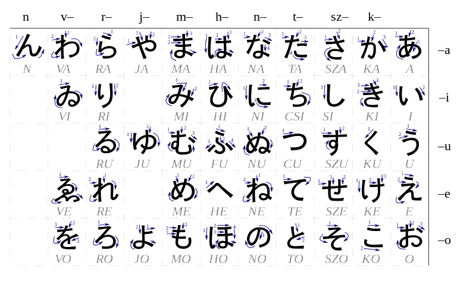
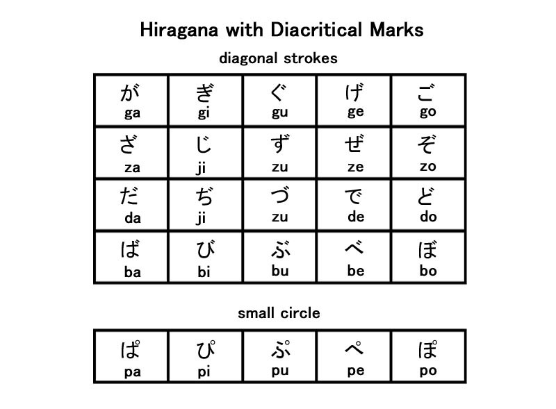
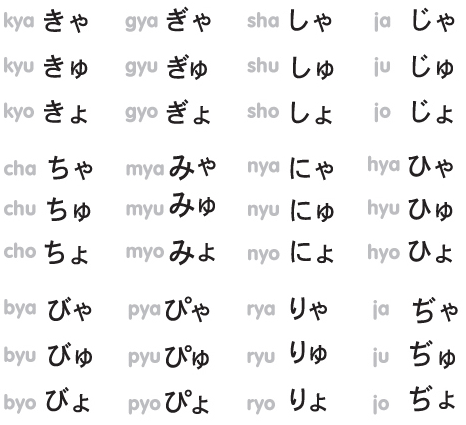
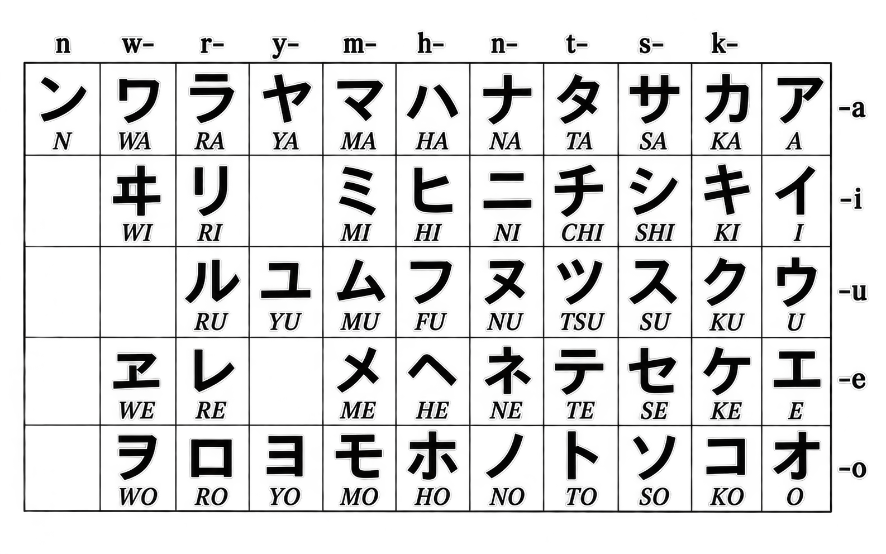
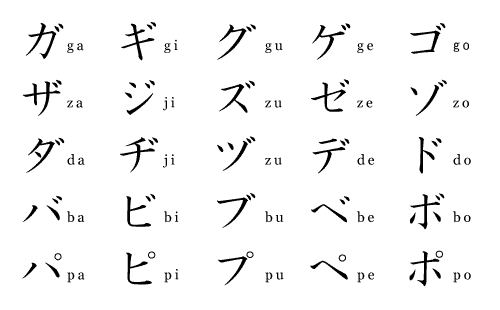
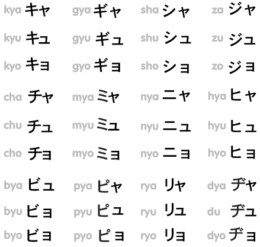

Alphabet
Unless you are focusing entirely on functional spoken vocabulary, the first step in anyones Japanese learning journey should be learning the alphabet. There are three main scripts and one romanization system for transcribing Japanese sounds into the Roman alphabet:
- Hiragana is a syllabic writing system used for native japanese words, verb endings and grammar particles.
- Katakana is a syllabic writing system that mirrors hiragana but is used for foreign loanwords and onomatopia.
- Kanji is a logographic system meaning that each character holds a one or more meanings.
- Rōmaji is a romanization system that uses the Roman alphabet to represent Japanese sounds.
Hiragana (ひらがな)
There are 46 basic characters, 25 modified characters (diacritics), representing a total of 71 different syllabic sounds. Combination of two syllabels into one can increase the total to 101 distinct sounds.
Basic Characters
Below is a chart of the basic 46 hiragana characters.

Diacritical Marks: Dakuten and Handakuten
Dakuten (゛, in chart below as "diagonal marks") and Handakuten (゜, in chart below as "small circle") are used to modify the pronunciation of certain hiragana characters.
For example, か (ka) becomes が (ga) with Dakuten, and は (ha) becomes ぱ (pa) with Handakuten.
Below is a chart showing all the hiragana characters that can be modified with these diacritical marks.

Yōon (拗音) — Combined Sounds
Yōon combines syllabic characters that end with an "i" sound (see -i row from "Basic Characters" chart above) with a small ゃ (ya), ゅ (yu) or ょ(yo) to create one contracted sound.
For example, き (ki) + ゃ (ya) = きゃ (kya).
See the chart below for a list of all syllables derived from these combinations.

Katakana (カタカナ)
It uses the same 71 syllabic sounds. But is commonly used for foreign loanwords, foreign names and onomatopia.
For example, the English word "computer" is written in katakana as コンピュータ (konpyūta).
It was originally used to transcribe Chinese words, and many words used in Japanese are Chinese in origin, for example: Ramen (derived from Lamian) is written as ラメン.
Words that may be originally Japanese but are derived from English like Pokemon are also written in katakana, as ポケモン.
It is also used for emphasis in the same way that italics are used in English. For example, すごい (Sugoi) the word meaning "amazing" or "awesome" and can be written in katakana as スゴイ.
Basic Characters
Below is a chart of the basic 46 katakana characters.

Diacritical Marks: Dakuten and Handakuten
Below is a chart showing all the katakana characters that can be modified with these diacritical marks.

Yōon (拗音) — Combined Sounds
See the chart below for a list of all katakana Yōon.

Other Topics for Kana (仮名)
There are a few other topics that are important to learn when learning the kana scripts. These include romanji and sound lengthening and pausing features.
Rōmaji (ローマ字)
Rōmaji is the romanization of Japanese sounds using the Roman alphabet. It is commonly used for transcribing Japanese words to English and can be very helpful for learning the language. Hence why you may see it on this website.
Romanji of Japanese words used in English you might recognise are: Sakura (cherry blossoms), Sushi, and Ramen (noodle soup).
There are different systems of romanization. Some spell thank you in Japanese as "arigatou" and some as "arigatō".
Chōon (長音) — Long Vowels
Long vowels take approximately twice as long to pronounce as short vowels. In Hiragana, they are generally written by adding another vowel character.
In Katakana, they are represented by a long dash (ー).
Lastly, in romanji they are represented by a macron (ā, ī, ū, ē, ō) or by doubling the vowel (aa, ii, uu, ee) except for the long o sound, which can be represented by ou.
Sokuon (促音) — Small っ:
The small っ indicates a brief closure before the next consonant. In Katakana, it is represented the equivilant character a small ッ.
In romanji it is represented by doubling the following consonant, for example, まって (wait) is written as Matte.
Kanji (漢字)
Kanji as a topic is quite complex so we will only breifly cover some examples of how they are used in this section.
There are three things we will touch on with Kanji.
- Kanji can be representational
- Their meanings can be related to their form.
- While this is true for a small amount of kanji it can help in learning the language.
- For example, the kanji for "tree" is 木 (ki), which looks somewhat like a tree, and the kanji for "forest" is 森 (mori), which is just a group of trees.
- Kanji can be compounded to form new words.
- Kanji can be read in different ways.
- Kanji can have multiple readings, which can be either "on'yomi" (音読み) or "kun'yomi" (訓読み).
- On'yomi is the reading derived from the original Chinese pronunciation, while kun'yomi is the native Japanese reading.
- These different readings often hold different meanings or uses; for example, the kanji for below 下 can be read as "ge" (ゲ, On'yomi) meaning inferior, or be read as "shita" (した, Kun'yomi).
- These readings may have the same meaning, but are used in different Kanji compounds.火山 which means volcano (transliterally: Fire mountain) uses the on'yomi reading "san" (サン). And 山道, meaning mountain path, uses the kun'yomi reading "yama" (やま)
- Common Kanji you might encounter in Japan:
- 日本 (にほん, Nihon) — Japan
- 東京 (とうきょう, Tōkyō) — Tokyo
- 日 (hi, nichi) — Sun, day, seen after dates
- 駅 (eki) — Station
- 入口/出口 (いりぐち/でぐち, iriguchi/deguichi) — Entrance/Exit
- 円 (en, yen) — Yen, see following prices
- 危ない (あぶない, Abunai) — Dangerous
- 飲む (のむ, Nomu) — To drink
- 食べる (たべる, Taberu) — To eat
Click here to view a page on this website that demonstrates the beautiful Kanji calligraphy see in the buddist heart sutra. Please use the navigation menu to leave this page.